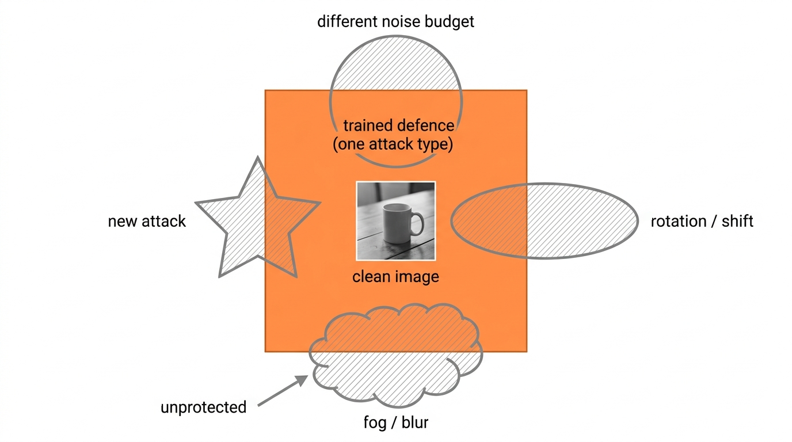

Can Robustness Generalize to Unseen Attacks?

In one sentence
Today's defences mostly protect a model against the specific attack it practised on; can we instead build a model that stays reliable against attacks and corruptions it has never seen — the way a good immune system handles a new virus?
What is the problem?
Suppose a security team hardens an image classifier. They attack it over and over during training with a well-known method that adds tiny amounts of noise to every pixel, and the model learns to ignore that noise. On their test, it now resists the attack almost perfectly.
Then someone tries something slightly different. They rotate the image by a few degrees. Or they change the colours a little. Or they add a small sticker in one corner. Or it is simply a foggy day. Very often, the hardened model fails on these as badly as an unprotected one — sometimes worse.
The model did not learn to be robust. It learned to be robust to that one thing. In security terms, it is like a lock that resists one particular lock-pick but opens for any other.
This open problem asks whether robustness can generalize: whether we can train against a limited set of threats and still get protection against threats we did not — and could not — anticipate.
Why does it matter?
In the real world, nobody tells you in advance which attack is coming.
- An attacker who knows a model is defended against one method will simply switch to another. A defence that only covers the threats it trained on gives a false sense of safety.
- Natural problems — weather, lighting, worn-out sensors, compression artefacts — are endlessly varied. No training set can list them all.
- Training against every known attack at once is expensive, and new attacks keep being invented after the model is deployed.
- For safety-critical systems — cars, medical devices, security cameras — "robust to the attacks in our paper" is not the guarantee people actually need.
What would a solution look like?
It helps to picture each kind of attack as a region around a clean image: the set of all changed versions that attack is allowed to produce. Noise on every pixel gives one shape of region. Rotations and shifts give a differently shaped one. Fog, blur and stickers give others. These regions overlap, but none of them contains all the others.

A real solution would not just make the orange square bigger. It would protect against changes the designer never listed, and it would come with an honest way to measure that — by holding some attack types back entirely and testing on them only at the end, the same way we keep a test set hidden from training.
The key idea: robust to what, exactly?
The heart of the problem is that we usually define robustness by a rule about the input: "no pixel may change by more than a tiny amount." That rule is easy to state and easy to attack with, so it became the standard. But it is not what we actually care about.
What we care about is closer to: "a change that would not fool a person should not fool the model." A person is not bothered by a slight rotation, a colour shift or light fog — none of which follows the pixel rule. So a model can satisfy the rule perfectly and still be fragile in every way that matters to people.
That suggests two routes to generalization. One is to describe allowed changes in a way that is closer to human perception — for example, changes that a perceptual similarity measure considers small. The other, which interests me most, is to move away from the input entirely and ask for robustness inside the model: if the internal representation is built from stable, meaningful features, then any change that leaves those features intact should leave the answer intact too, no matter what kind of change it was (see OP-02).
Why is it hard?
- "Unseen" is open-ended. There is no complete list of possible attacks or corruptions, so we can never test everything. Any evaluation is only as good as the variety of held-out threats.
- Defences can trade off against each other. Becoming more robust to one kind of change can make a model less robust to another. Covering several at once often lowers protection against each.
- Evaluation is easy to get wrong. Many published defences looked strong until someone attacked them more carefully. A defence that seems to generalize may simply be hiding its weakness from weak attacks.
- Accuracy and cost. Broad robustness usually costs clean accuracy and a lot of extra training computation.
- Attacks and corruptions are different. A deliberate attacker searches for the worst case; fog and blur are random. A method that handles one does not automatically handle the other.
What has been tried so far
- Training against several attacks at once — mixing different kinds of perturbation during training. It widens protection, but each added type tends to weaken the others, and it still does not reach truly new attacks.
- Perception-based threat models — defining "small change" with a learned measure of how different two images look to people, and training against the worst such change. A promising way to cover many kinds of change at once.
- Data augmentation for corruptions — training on mixtures of randomly transformed images so the model sees many kinds of distortion. This improves robustness to natural corruptions held out from training.
- Benchmarks of unforeseen threats — test suites of common corruptions, and collections of attack types deliberately not used in training, so generalization can actually be measured.
- Stronger, standardised evaluation — automatic attack suites that check defences more carefully, after many earlier defences turned out to be weaker than claimed.
- Certified methods — mathematical guarantees of robustness within a region. Reliable, but only for the specific region they are designed for.
Most of these still work at the level of the input: they decide which input changes are allowed. Much less has been done on making the representation itself stable in a way that does not depend on any particular list of changes.
How I would approach it
- Split threats into a training group and a held-out group by family — for example, train only against pixel noise, then test on rotations, colour shifts, patches, blur and fog that the model never saw.
- Compare standard defences with methods that encourage a stable internal representation, measured inside the network rather than only at the output.
- For each model, check whether a simple measurement of representation stability on seen threats predicts its accuracy on the unseen ones. If it does, that is a cheap way to forecast generalization before deployment.
- Evaluate every defence with strong, adaptive attacks — including attacks that know about the defence — so that any apparent generalization is real.
Questions still open
- Is there a definition of "small change" that covers most unseen attacks and corruptions at once, and that people would agree with?
- Can robustness defined inside the representation transfer to new input-level attacks better than robustness defined on the input? (see OP-02)
- Why do defences against different kinds of change interfere with each other — and can that interference be avoided?
- How should "unseen" be tested fairly, so that results are not just a lucky choice of held-out attacks?
- When a model meets an attack it cannot handle, can it at least notice and raise a warning? (see OP-01)
- Does the same problem appear in language models facing new styles of misleading prompts? (see OP-20)
This problem connects naturally to recognising never-seen situations in autonomous driving (OP-13), where the "unseen attack" is often just an unusual road, and to sensor failures that no training set prepared for (OP-15).
Work on this together
If you work on adversarial attacks and defences, robustness benchmarks or perceptual similarity — or you run a system that keeps meeting failures nobody planned for — I would love to hear from you. Disagreeing with how I framed the problem is just as welcome.
Reach out about OP-03Further reading
- Madry et al. — Towards Deep Learning Models Resistant to Adversarial Attacks (ICLR 2018)
- Athalye, Carlini & Wagner — Obfuscated Gradients Give a False Sense of Security (ICML 2018)
- Hendrycks & Dietterich — Benchmarking Neural Network Robustness to Common Corruptions and Perturbations (ICLR 2019)
- Engstrom et al. — Exploring the Landscape of Spatial Robustness (ICML 2019)
- Tramèr & Boneh — Adversarial Training and Robustness for Multiple Perturbations (NeurIPS 2019)
- Hendrycks et al. — AugMix: A Simple Data Processing Method to Improve Robustness and Uncertainty (ICLR 2020)
- Croce & Hein — Reliable Evaluation of Adversarial Robustness with an Ensemble of Diverse Parameter-free Attacks (ICML 2020)
- Laidlaw, Singla & Feizi — Perceptual Adversarial Robustness: Defense Against Unseen Threat Models (ICLR 2021)